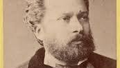

Türk Edebiyatı Yazarları
| Yazar | Dönem | Doğum - Ölüm | Tür | Etkilendiği Akım |
|---|---|---|---|---|
|  Namık Kemal | Tanzimat | 1840 - 1888 | Şair, Oyun Yazarı, Roman | Romantizm, Realizm |
.jpeg) Halide Edib Adıvar
Halide Edib Adıvar
|
Milli Edebiyat | 1884 - 1964 | Romancı, Hikayeci, Gazeteci | Realizm, Naturalizm |
.jpeg) Mehmet Akif Ersoy
Mehmet Akif Ersoy
|
Milli Edebiyat | 1873 - 1936 | Şair, Vaiz | Realizm, İdealizm |
.jpeg) Orhan Pamuk
Orhan Pamuk
|
Çağdaş | 1952 - (Yaşıyor) | Romancı, Edebiyat Eleştirmeni | Postmodernizm |
.jpeg) Ahmet Hamdi Tanpınar
Ahmet Hamdi Tanpınar
|
Cumhuriyet | 1901 - 1962 | Roman, Şiir, Deneme | Modernizm |
.jpeg) Sabahattin Ali
Sabahattin Ali
|
Cumhuriyet | 1907 - 1948 | Şair | Realizm |
.jpeg) Yaşar Kemal
Yaşar Kemal
|
Çağdaş | 1923 - 2015 | Romancı, Hikayeci | Realizm |
.jpeg) Ahmet Arif
Ahmet Arif
|
Çağdaş | 1927 - 1991 | Şair | Realizm |
.jpeg) Orhan Veli Kanık
Orhan Veli Kanık
|
Cumhuriyet | 1914 - 1950 | Şair | Garip Akımı |
.jpeg) Attila İlhan
Attila İlhan
|
Çağdaş | 1925 - 2005 | Şair, Romancı, Senarist | Sosyal Realizm |
.jpeg) Ahmet Muhip Dıranas
Ahmet Muhip Dıranas
|
Servet-i Fünun | 1909 - 1980 | Şair, Oyun Yazarı | Sembolizm |
.jpeg) Fuzuli
Fuzuli
|
Klasik | 1494 - 1556 | Şair | Divan Edebiyatı |
.jpeg) Yahya Kemal Beyatlı
Yahya Kemal Beyatlı
|
Servet-i Fünun | 1884 - 1958 | Şair, Yazardır | Parnasizm |
.jpeg) Nazım Hikmet
Nazım Hikmet
|
Çağdaş | 1902 - 1963 | Şair, Oyun Yazarı | Füturizm,Realizm |
.jpeg) Halit Ziya Uşaklıgil
Halit Ziya Uşaklıgil
|
Servet-i Fünun | 1886 - 1945 | Roman, Hikaye | Realizm,Sembolizm |